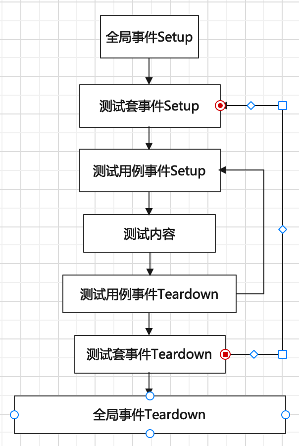

GTEST有三种事件，分别是：
- 全局事件
- 测试套事件
- 测试用例事件
其执行顺序为：

1. 全局事件
1.1. 全局事件的实现
- 要继承
testing::Environment类 - 要实现 SetUp()和TearDown()
class MyEnv :: public testing::Environment
{
public:
virtual void SetUp()
{
// 全局Setup操作
}
virtual void TearDown()
{
// 全局Teardown操作
}
}
1.2. 全局事件的调用
int main( ... )
{
testing::AddGlobalTestEnvironment(new MyEnv);
testing::InitGoogleTest(&argc, argv);
return RUN_ALL_TESTS();
}
2. 测试套事件 TestSuite
2.1. 测试套事件的作用
常用来管理其它需要用到的资源
2.2. 测试套事件的实现
- 要继承testing::Test
- 要实现SetUpTestSuite和TearDownTestSuite。
- 每个测试用例都会生成一个MyTest的子类对象。测试套事件对所有这些对象ß共享，它们都是静态成员函数。
class MyTest :: public testing::Test
{
protected:
static void SetUpTestSuite()
{
// 常用来管理其它需要用到的资源，对资源初始化
shared_resource_ = new xxx();
}
static void TearDownTestSuite()
{
delete shared_resource_;
shared_resource_ = NULL;
}
static T * shared_resource_; // static函数只能使用static成员
}
2.3. 测试套事件的使用
TEST_F(MyTest, test_case_001)
{
// 可在此处使用shared_resource
}
3. 测试用例事件 TestCase
3.1. 测试用例事件的实现
- 要继承testing::Test
- 要实现SetUp()和TearDown()
- 为了保证每个测试用例的独立性，应每次都重新构建被测对象
class MyTest :: public testing::Test
{
protected:
virtual void SetUp()
{
// 被测对象的初始化
}
virtual void TearDown()
{
// 被测对象销毁
}
T testObject;
}
3.2. 测试用例事件的调用
TEST_F(MyTest, test_case_001)'
{
EXPECT_EQ(expectedValue, testObject.SomeFunction());
}